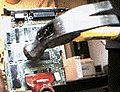

this page displays just fine in Netscape so go complain to Bill Gates if it looks weird to you
Sexy Sayings
Like the Random Monty Python Skit Server, this page takes you to a new selection of text each time you reload. In this case, what you get is a set of "sayings" that read like Mad Libs pages thought up at a party of sexual deviants. Using a randomized collection of subjects like "cross-dressing midget," verbs like "defiled" and objects like "rampaging cod," the Sexy Sayings server comes up with surreal descriptions of unlikely sex acts: "'Sweet Jesus!' wheezed the nymphomaniacal cheerleader as the slurping ex-celibate devoured her bovine earlobes." While this site offers definitive proof that dirty pictures aren't the only things parents need to worry about, it's strangely appealing (or maybe we're just sick, sick, sick).
Mouth Jewelry
Anna Nicole Smith loves men with braces, according to a quote at this site (too bad you didn't get to meet her when you were 13). And she isn't the only one; seems lots of people are into the hypnotic dazzle of a mouthful of metal. Mouth Jewelry is "for people who have braces as well as people who like the sight of braces"; it includes pictures of famous tin grins (like Chelsea Clinton's); images of torturous-looking orthodontic devices like bionators and bite plates; and the Braces Book of Records, which tells of a young woman who got braces at the age of 6, has had them for 15 years, and doesn't want to get rid of them.
The Illustrated Guide To Breaking Your Computer

Should you ever decide to act on the impulse to smash your recalcitrant computer to smithereens, Tom "Abort, Retry, Fail, THIS!" Murphy is here to guide you through the process. Tom, a high school senior, notes that there's a right and a wrong way to blowtorch circuit boards, that it's best to score the glass on the monitor before breaking it, and that you should make "menacing evil faces" to intimidate your keyboard before going at it with an electric drill. If you can't wreak wholesale destruction on your disk drive without losing your job, you might at least take this piece of advice: ׁ.5" computer disks are inexpensive, easy to find and fun to break.”
Densa
Swing and a miss! The creators of DENSA, a site promoting "the zen of being stupid," try to take a jab at the high-IQed folk at MENSA, but embarrassingly miss their mark. Inane and wholly unclever, the site really feels as though it were conceived by a bunch of morons (the content aspires to be satire, but really only succeeds in being foolish). Pictures of actors who belong or don't belong to DENSA occupies most of this unusual waste of time.
The Body Inflation Fetish Homepage

Stranger than most fetish pages (and that's saying a lot), the Body Inflation Homepage has proven, once again, that our staff has indeed not "seen it all." The anonymous author of the site, who goes by the alias Luther Kane, has a "special fixation" on images of inflated people. No, not inflatable dolls, but inflated people. And by inflated people, we don't mean overblown personalities like Rush Limbaugh. Instead, think of Violet, the expanding golden-ticket winner in Willy Wonka and the Chocolate Factory. Hey, whatever floats his boat.
Sesame Strip
It's not the Sesame Street you grew up with; Sesame Strip is the darker side of public access television. Meet a beer-guzzling Tickle Me Elmo, learn about Ms. Piggy's tragic rehab travails, and read through Bert and Ernie's gay lifestyle guide. It's an amusing site, despite the section devoted to a mock television show featuring Bob Dole in drag.
The Bunny Survival Tests Homepage
Reminiscent of the mad Twinkie-bashing experiments conducted at the T.W.I.N.K.I.E.S. Project (www.owlnet.rice.edu/~gouge/twinkies.html), the Bunny Survival Tests (BST) turn a contemplating eye on marshmallow bunnies, studying their resistance to varied environmental pressures. The sometimes cruel and unusual tests (all detailed at the site with graphics of the control and experimental confectionery bunny subjects) include electrocution tolerance, laser exposure and oxygen deprivation. Unfortunately, not all of the marshmallow bunnies made it through the experiments in one piece; some degraded into sad, ooey-gooey messes of morbid mallow...all in the name of science.
Hootie and the Blowfish Suck
For those of you who have been a little slow to come to the above realization, or for those of you who, heaven forbid, still crank up the car radio every time "Let Her Cry" comes on, here's an alternate view from a guy who considers Hootie the worst entertainers to come out of South Carolina since Vanna White. For instance, did you know that Hootie was to blame for the New York Rangers' early season woes last season? The site is a little barren (not that you need many reasons to hate the band), but we're looking forward to the promised coming attractions, including "highlights of me booing Darius when he sang the national anthem at an Orioles game last year."
Celebrity Whack-A-Mole
From the demented and inspired mind of Kevin Kelm (the Webmaster behind the Virtual Missile Base Tour, our #1 site way back in IU #4) comes Celebrity Whack-A-Mole, a cyber version of the popular Chuck E. Cheese game where you thump various celebs on the noggin as they pop out of their holes. While it's very therapeutic whacking such bothersome personalities as Geraldo, O.J. and Cher, make sure you watch out for the spotted owl and Mother Teresa. If you hit either of the endangered species, you lose major points (not just in the game, but in real life as well).
Sad Mr. Wu's Send-a-Pickle Service
Sad Mr. Wu is downtrodden (contrary to the site's logo, see right) because he has been forced to temporarily halt this important enterprise. Mr. Wu explains, in a page from the Steve Case handbook, that due to the overwhelming response to his pickle-sending service, he has been unable to keep up with the crush of orders. Mr. Wu is apologetic, especially to those people who sent money and never received a pickle, and he assures site visitors that he's working hard to develop a more "efficient pickle-processing system."
The Giant Hatpin Collection
This is the site of an enormous hatpin collection which the owner admits has gotten "kinda out of control." (At least he realizes the extent of his madness.) The site catalogs over 1,100 hatpins and tie tacks, and is constantly trying to solicit more donations from Web users. You'll find pins commemorating the Olympics, Spy Vs. Spy, Cheeselovers of America, Homer Simpson, Weight Watchers, the KKK and vacation spots such as Myrtle Beach. Odder entries include a Pizza Hut "200 accident-free hour driver" pin and a Skoal pin reading, "If You Expectorate with Me--You Gotta Chew."
Humungous Bank
At first it seems awfully strange that anyone would pay the $100 InterNIC fee just to set up this faux online bank--but when you finally make it though to the end of the site, the reason for it becomes clear. It's merely a gimmicky parody of the banking institution set forth by Richmond Savings, a Canadian credit union looking for a little PR. Doh! We were suckered. The page is actually amusing at times, particularly when it bashes on CEO-types. Be careful not to confuse it with humongous.com, a subsidiary of GT Interactive that creates kids' games about characters like Fatty Bear™, Buzzy the Knowledge Bug™ and Pajama Sam™.
Anonymous Message Server
The Anonymous Message Server is known by a host of other names, including "the page that sits in the corner and does as it's told" and "so much fun, it makes you sick!" If you miss the curiously '70s pastime of sitting in a public bathroom scribbling a message for a random person to read, the Server will fulfill your graffiti needs. Just put down your deepest thoughts (or dirtiest limerick), hit send, and you'll be rewarded with the previous user's bizarre musings.
AOL Art
Twisted works of art such as "This Is Your Brain on AOL" and "Unholy Triptych" line the walls of this virtual gallery. The project was born out of Michael P. Lambert's repeated tries to use those ubiquitous AOL spam disks for his own personal use--but the darn disks were so cheap that they kept erasing his data! Furious, Michael destroyed the disks with his bare hands and called it art. In later months, he developed a more refined style, using drills, glue, scissors and other tools to create opuses such as "Mr. Potato Disk."
Kraft Dinner Worship Page
A shrine to the second cheapest foodstuff at the Piggly-Wiggly. (Ramen is the cheapest, in case anyone is really that out-of-touch with the starving-student thing.) The author of the page is a hard-working magician, and he notes, "I know it's been called the poverty pack, but I am a free spirit who likes to carve out my own living rather than work for 'THE MAN.' There have been days when those little yellow noodles doing their dance in the boiling water were a celebration of life. Yes, another day that I won't starve. Those wonderful people at Kraft have bundled survival in a box." Sections such as "No milk, no margarine, no problem" and "Don't be afraid to experiment" encourage doctoring it up with stuff like ketchup and, uh, Absolut Peppar.